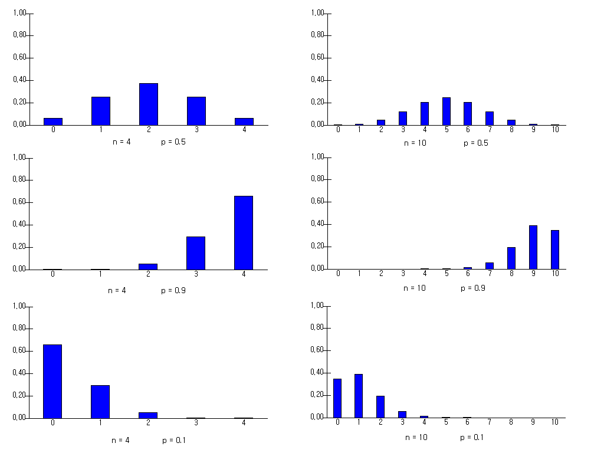
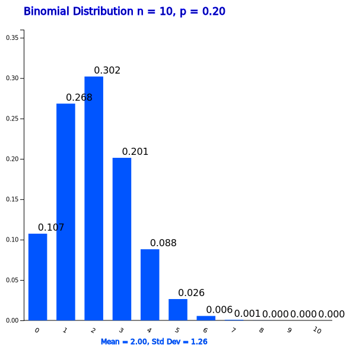

Chapter 5. Probability Distribution
5.3.1 Binomial Distribution
[presentation] [video]
[Binomial Experiment]
| n = | 1 | 10 | p = | 0 | 1 | ||||
Answer
This problem is the enforcement of Bernoulli trial in each game of 'win' and 'fail'. This Bernoulli trial is repeated four times. The sample space is all about winning or losing game and there are elements shown as follows by marking the winning in O and the losing in X.
S = {‘XXXX’, ‘OXXX’, ‘XOXX’, ‘XXOX’, ‘XXXO’, ‘OOXX’, ‘OXOX’, ‘OXXO’, ‘XOOX’, ‘XOXO’, ‘XXOO’, ‘OOOX’, ‘OOXO’, ‘OXOO’, ‘XOOO’, ‘OOOO’}
1) The event that the Tiger will lose all games is {'XXXX'} and the probability of this event is (0.4)×(0.4)×(0.4)×(0.4) = \(\small (0.4)^4\).
2) There are four events that the Tiger is winning once and losing three times such as {‘OXXX’, ‘XOXX’, ‘XXOX’, ‘XXXO’}. These four cases are equal to the number of O's in a single seat when there are four seats which is \(\small{}_4C_1\). Since the probability of each event is (0.6)×(0.4)×(0.4)×(0.4), the probability of the Tiger winning once is \(\small{}_4C_1 (0.6)(0.4)^3\).
3) There are six events that the Tiger is winning two times and losing two times such as {‘OOXX’, ‘OXOX’, ‘OXXO’, ‘XOOX’, ‘XOXO’, ‘XXOO’}. These six cases are equal to the number of O's in two seats when there are four seats which is \(\small{}_4C_2\). Since the probability of each event is (0.6)×(0.6)×(0.4)×(0.4), the probability of the Tiger winning twice is \(\small{}_4C_2 (0.6)^2(0.4)^2\).
4) There are four events that the Tiger is winning three times and losing one time such as {‘OOOX’, ‘OOXO’, ‘OXOO’, ‘XOOO’}. These four cases are equal to the number of O's in three seats when there are four seats which is \(\small{}_4C_3\). Since the probability of each event is (0.6)×(0.6)×(0.6)×(0.4), the probability of the Tiger winning three times is \(\small{}_4C_3 (0.6)^3(0.4)^1\).
5) There is one event that the Tiger is winning four times such as {‘OOOO’}. This one case is equal to the number of O's in four seats when there are four seats which is \(\small{}_4C_4\). Since the probability of each event is (0.6)×(0.6)×(0.6)×(0.6), the probability of the Tiger winning all four times is \(\small{}_4C_4 (0.6)^4\).
6) The probability distribution function of the random variable X = ‘the number of games the Tiger wins’ is a summary of the above probabilities.
| \(\small X = x \) | \(\small P(X=x) \) |
|---|---|
| 0 | \(\small {}_{4}C_0 (0.4)^4 = 0.0256 \) |
| 1 | \(\small {}_{4}C_1 (0.6) (0.4)^3 = 0.1536 \) |
| 2 | \(\small {}_{4}C_2 (0.6)^2 (0.4)^2 = 0.3456 \) |
| 3 | \(\small {}_{4}C_3 (0.6)^3 (0.4) = 0.3456 \) |
| 4 | \(\small {}_{4}C_4 (0.6)^4 = 0.1296 \) |
Answer
Select [Binomial Distribution] from the menu of 『eStatU』 and enter \(\small n = 4, p = 0.6\) and press the [Execute] button to display a binomial function graph as shown in <Figure 5.3.4>. Table 5.3.4 shows the table when you click the [Binomial Prob Table] button. This table makes it easy to obtain Binomial distribution probabilities from [Example 5.3.4].
[Binomial Distribution]
| n = | 1 | 100 | p = | 0 | 1 |
If the probability of success is \(p\) in a Bernoulli trial and the trial is repeated \(n\) times independently, the probability distribution function that the random variable \(X\) = the number of success’ is \(x\) is as follows: It is called a binomial distribution and denoted as \(B(n,p)\). $$ f(x) = {}_n C_x p^x (1-p)^{n-x} , \qquad x = 0,1,2, ... , n $$ The expectation and variance of the binomial distribution are as follows. $$ E(X) = np, V(X) = np(1-p) $$

Answer
This is a Binomial distribution with \(n = 10, p = 0.2\).
\( \qquad \quad \small P(X=3) = {}_{10} C_3 (0.2)^3 (1-0.2)^{10-3} = 0.2013 \)
$$ \small \begin{multline} \shoveleft P(X \ge 2) = 1 - P(X=0) - P(X=1) \\ \shoveleft = 1 - {}_{10} C_0 (0.2)^0 (1-0.2)^10 - {}_{10} C_1 (0.2)^1 (1-0.2)^10-1 = 1 - 0.1074 - 0.2684 = 0.6242\\ \end{multline} $$
\( \qquad \quad \small E(X) = np = 10 × 0.2 = 2 \)
\( \qquad \quad \small V(X) = np(1-p) = 10 × 0.2 × 0.8 = 1.6 \)
\( \qquad \quad \small \sigma(X) = 1.265 \)
Select ‘Binomial Distribution’ from the menu of 『eStatU』, enter \(n=10, p=0.2\), and click on the [Execute] button to display the graph shown in <Figure 5.3.6>. Checking 'Show Probability' option shows the probability on each bar where you can see the values in the above calculations.
|

<Figure 5.3.6> 『eStatU』 Binomial distribution when \(n = 10, p = 0.2\)
|
Pressing the [Binary Prob Table] button will show the Binomial distribution table shown in Table 5.3.6. From here you can see that \(\small P(X \ge 2)\) = 0.6242
Table 5.3.5 『eStatU』 Binomial Distribution Table when \(n = 10, p = 0.2\)
| \(n = 10\) | \(p = 0.200\) | ||
|---|---|---|---|
| \(x\) | \(\small P(X = x)\) | \(\small P(X \le x)\) | \(\small P(X \ge x)\) |
| 0 | 0.1074 | 0.1074 | 1.0000 |
| 1 | 0.2684 | 0.3758 | 0.8926 |
| 2 | 0.3020 | 0.6778 | 0.6242 |
| 3 | 0.2013 | 0.8791 | 0.3222 |
| 4 | 0.0881 | 0.9672 | 0.1209 |
| 5 | 0.0264 | 0.9936 | 0.0328 |
| 6 | 0.0055 | 0.9991 | 0.0064 |
| 7 | 0.0008 | 0.9999 | 0.0009 |
| 8 | 0.0001 | 1.0000 | 0.0001 |
| 9 | 0.0000 | 1.0000 | 0.0000 |
| 10 | 0.0000 | 1.0000 | 0.0000 |
|
Practice 5.3.1
It is said that 60% of car drivers usually use a seat belt. When you select 15 drivers randomly, find the following probabilities for the number of drivers who normally use the seat belt. Check the calculation using 『eStatU』.
1) Probability of 10 or more drivers.
2) Probability of 8 or less drivers.
3) Probability of at least 11 drivers.
4) Probability of at least 7 drivers.
|
Answer
When you select \(n=50, p=0.05\) from the ‘Binomial Distribution’ of 『eStatU』 and click on the [Execute] button, the graph such as <Figure 5.3.7> appears. If you click the [Binomial Prob Table] button, then Table 5.3.6 appears.
1) You can check \(\small P(X=0)\) = 0.0769 easily from the table.

| \(n = 50\) | \(p = 0.050\) | ||
|---|---|---|---|
| \(x\) | \(\small P(X = x)\) | \(\small P(X \le x)\) | \(\small P(X \ge x)\) |
| 0 | 0.0769 | 0.0769 | 1.0000 |
| 1 | 0.2025 | 0.2794 | 0.9231 |
| 2 | 0.2611 | 0.5405 | 0.7206 |
| 3 | 0.2199 | 0.7604 | 0.4595 |
| 4 | 0.1360 | 0.8964 | 0.2396 |
| \(\cdots\) | \(\cdots\) | \(\cdots\) | \(\cdots\) |
\( \qquad \small P( 1 \le X \le 3) = P( X \le 3) - P( X \le 0) = 0.7604 – 0.0769 = 0.6835 \)
\( \qquad \small P(X \ge 3) = 1 - P( X \le 2) = 1 – 0.5405 = 0.4595 \)
|
Practice 5.3.2
A salesperson found that there was a 30% chance of selling a product when a customer visited.
If one day ten customers visit this salesman, calculate following probabilities using 『eStatU』.
1) Exactly how likely is it to sell three products?
2) What is the probability of selling three or more products?
3) What is the probability of selling less than 3 products?
4) What are the odds that none of them could be sold?
5) What is the probability of selling 5 products?
|
Multiple Choice Exercise
*** Choose one answer and click [Submit] button
5.26 What is the mean and variance of the binomial distribution \( B(100, \frac{1}{5} ) \)?
5.27 What is the variance of a random variable \(\small X\) which follows a binomial distribution \( P(X) = {}_4 C _x (0.2)^x (1-0.2) ^{4-x} \)
5.28 There are 10 multiple choice problems and only one of the four answers is the right answer. What is the probability that four questions are correct when answering 10 questions?